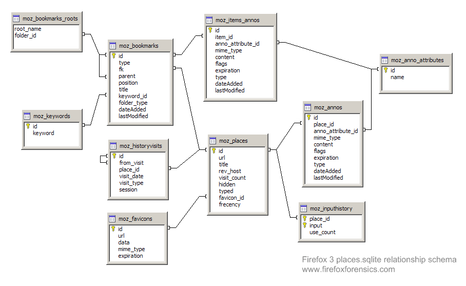

Mozilla firefox 3 history file format
Starting in Firefox 3, a new file format is used to record browser history information. Rather than storing this information in a flat file using the mork file format, the information is kept in a SQLite database.
File Locations
Windows XP
C:\Documents and Settings\
Windows Vista
C:\Users\
GNU/Linux
/home/
Mac OS X
/Users/
File Header
Firefox 3 history files start with
53 51 4C 69 74 65 20 66 6F 72 6D 61 74 20 33
which represents the ascii string SQLite format 3. This is normal for any Sqlite database file, so it may be more appropriate to verify that the file is a Firefox 3 history file by looking for the database tables within the file. For example, at offset 120701 (0x1D77D) the hex value
43 52 45 41 54 45 20 54 41 42 4C 45 20 6D 6F 7A 5F 62 6F 6F 6B 6D 61 72 6B 73
can be found. This represents the ascii string CREATE TABLE moz_bookmarks. At offset 120973 (0x1D88D) the hex value
43 52 45 41 54 45 20 49 4E 44 45 58 20 6D 6F 7A 5F 62 6F 6F 6B 6D 61 72 6B 73 5F 69 74 65 6D 69 6E 64 65 78
can be found. This represents the ascii string CREATE TABLE moz_bookmarks_itemindex.
Database Tables
The places.sqlite file is essentially a database with multiple tables:
moz_anno_attributes
moz_annos
moz_bookmarks
moz_bookmarks_roots
moz_favicons
moz_historyvisits
moz_inputhistory
moz_items_annos
moz_keywords
moz_places

moz_places
The moz_places table holds some of the information necessary to reconstruct the browser history.
id INTEGER PRIMARY KEY
url LONGVARCHAR (The whole URL string)
title LONGVARCHAR (The title presented from the TITLE tags on the page)
rev_host LONGVARCHAR (this is the host name from the URL in reverse)
visit_count INTEGER
hidden INTEGER
typed INTEGER
favicon_id INTEGER
frecency INTEGER
moz_historyvisits
The moz_historyvisits table holds the other information that you need to link up with moz_places to reconstruct the browser history.
id INTEGER
from_visit INTEGER
place_id INTEGER
visit_date INTEGER
visit_type INTEGER
session INTEGER
The place_id column of the moz_historyvisits table corresponds to the id column of the moz_places table.
The visit_date column keeps time in PRTime format, a 64-bit integer representing the number of microseconds since midnight (00:00:00) 1 January 1970 Coordinated Universal Time (UTC). This level of precision may be more than what is required for a forensic application, but the PRTime format can easily be converted into CTime format by dividing by 1,000,000. The datetime function in SQLite can be used to convert CTime to human readable format, as demonstrated in the example below.
The visit_type column is an integer that represents one of seven types.
| 1 | TRANSITION_LINK | This transition type means the user followed a link and got a new toplevel window. |
| 2 | TRANSITION_TYPED | This transition type means that the user typed the page's URL in the URL bar or selected it from URL bar autocomplete results, clicked on it from a history query (from the History sidebar, History menu, or history query in the personal toolbar or Places organizer. |
| 3 | TRANSITION_BOOKMARK | This transition is set when the user followed a bookmark to get to the page. |
| 4 | TRANSITION_EMBED | This transition type is set when some inner content is loaded. This is true of all images on a page, and the contents of the iframe. It is also true of any content in a frame, regardless of whether or not the user clicked something to get there. |
| 5 | TRANSITION_REDIRECT_PERMANENT | Set when the transition was a permanent redirect. |
| 6 | TRANSITION_REDIRECT_TEMPORARY | Set when the transition was a temporary redirect. |
| 7 | TRANSITION_DOWNLOAD | Set when the transition is a download. |
Insertable Visit Types
This allows you to join against the defined visit types to select the actual name or description
CREATE TABLE IF NOT EXISTS history_visit_types (
id INTEGER PRIMARY KEY,
name TEXT,
description TEXT
);
INSERT INTO history_visit_types (id, name, description)
VALUES
(1, 'TRANSITION_LINK', 'This transition type means the user followed a link and got a new toplevel window.'),
(2, 'TRANSITION_TYPED', 'This transition type means that the user typed the page''s URL in the URL bar or selected it from URL bar autocomplete results, clicked on it from a history query (from the History sidebar, History menu, or history query in the personal toolbar or Places organizer.'),
(3, 'TRANSITION_BOOKMARK', 'This transition is set when the user followed a bookmark to get to the page.'),
(4, 'TRANSITION_EMBED', 'This transition type is set when some inner content is loaded. This is true of all images on a page, and the contents of the iframe. It is also true of any content in a frame, regardless of whether or not the user clicked something to get there.'),
(5, 'TRANSITION_REDIRECT_PERMANENT', 'Set when the transition was a permanent redirect.'),
(6, 'TRANSITION_REDIRECT_TEMPORARY', 'Set when the transition was a temporary redirect.'),
(7, 'TRANSITION_DOWNLOAD', 'Set when the transition is a download.');
Gathering browser history
Live browser history for Firefox 3 can be gathered by connecting to the Sqlite database and performing simple queries. For example, the URLs visited and the date and time of the visit can be gathered with this query:
SELECT datetime(moz_historyvisits.visit_date/1000000,'unixepoch'), moz_places.url
FROM moz_places, moz_historyvisits
WHERE moz_places.id = moz_historyvisits.place_id
Another exmaple that joins against the history_visit_types table
SELECT
history.id,
places.id as place_id,
datetime(history.visit_date/1000000,'unixepoch') as visit_date,
rank() OVER (PARTITION BY place_id ORDER BY visit_date) as visit_number,
places.visit_count as total_visits,
visit_types.name as visit_type,
places.url,
places.description
FROM moz_historyvisits as history
JOIN moz_places as places ON history.place_id = places.id
LEFT JOIN history_visit_types visit_types ON history.visit_type = visit_types.id
ORDER BY visit_date;